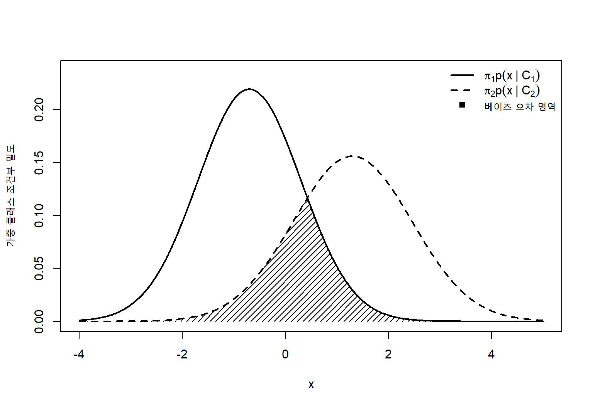
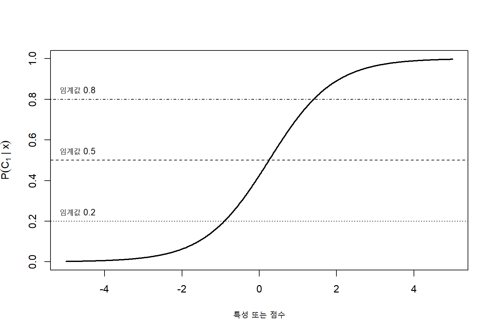
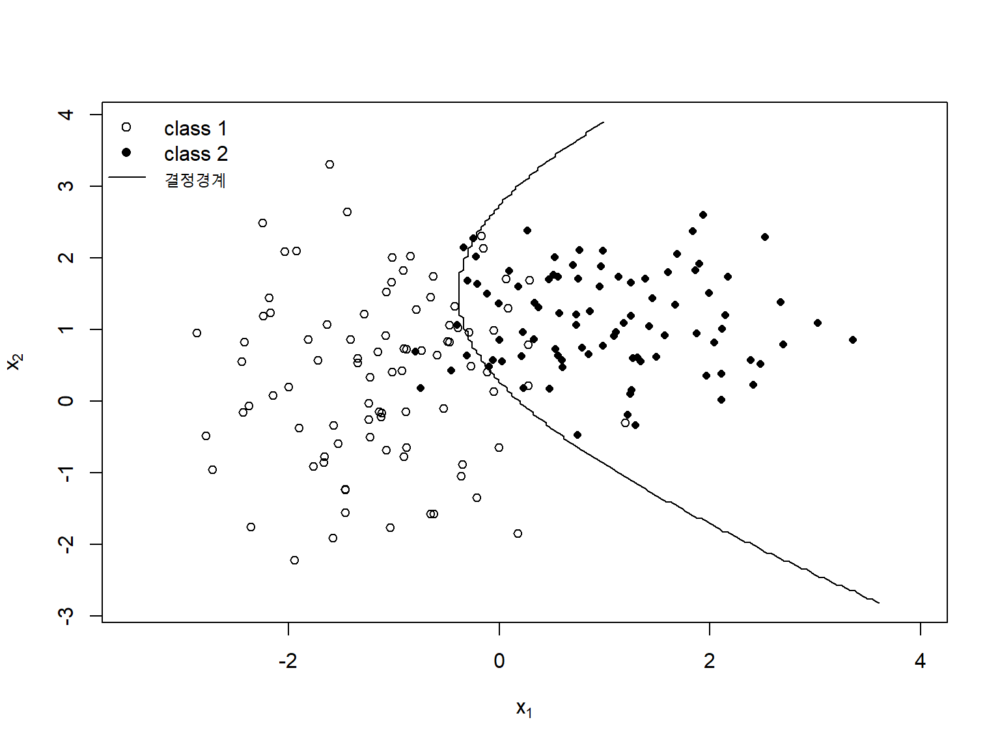
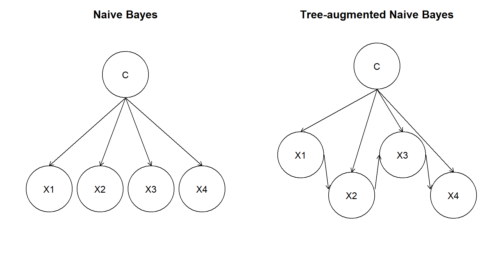
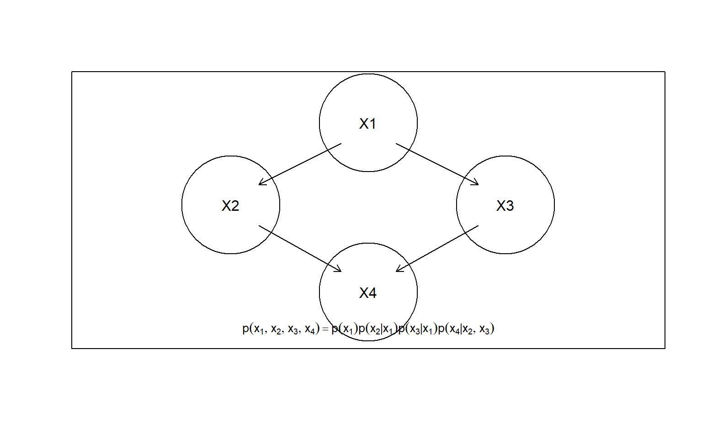
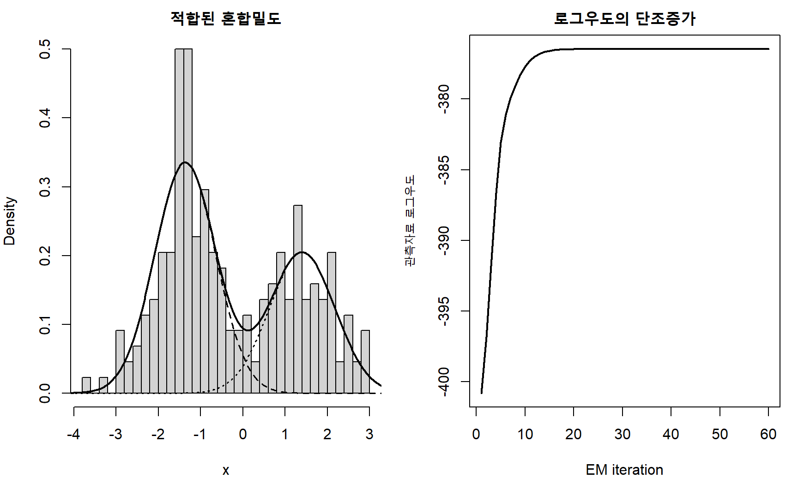

7 베이지안 분류기
베이지안 분류기(Bayesian classifier)는 관측된 특성으로부터 각 클래스의 사후확률(posterior probability)을 계산하고, 잘못된 의사결정에서 발생하는 손실까지 고려하여 최종 클래스를 선택한다. 이 접근은 단순한 분류규칙을 넘어 확률모형, 통계적 추정, 의사결정이론과 그래피컬 모형을 하나의 틀로 연결한다.
분류자료를
\[ \mathcal D = \{(\mathbf x_i,y_i)\}_{i=1}^{n}, \qquad \mathbf x_i\in\mathcal X, \qquad y_i\in\{C_1,\ldots,C_K\} \tag{7.1}\]
라고 하자. 새로운 입력 \(\mathbf x\)가 주어졌을 때 베이지안 분류의 핵심은 클래스별 사후확률
\[ P(C_k\mid\mathbf x), \qquad k=1,\ldots,K \tag{7.2}\]
을 계산하는 것이다. 베이즈 정리에 의해
\[ P(C_k\mid\mathbf x) = \frac{p(\mathbf x\mid C_k)P(C_k)} {p(\mathbf x)} = \frac{p(\mathbf x\mid C_k)\pi_k} {\sum_{\ell=1}^{K}p(\mathbf x\mid C_\ell)\pi_\ell} \tag{7.3}\]
이다. 여기서 \(\pi_k=P(C_k)\)는 클래스 사전확률(prior probability), \(p(\mathbf x\mid C_k)\)는 클래스 조건부 밀도(class-conditional density) 또는 우도(likelihood), \(p(\mathbf x)\)는 주변밀도 또는 증거(evidence)이다.
중요베이지안 분류의 핵심 구조
베이지안 분류는 세 단계로 구성된다. 첫째, 각 클래스에서 입력자료가 생성되는 확률모형 \(p(\mathbf x\mid C_k)\)를 설정한다. 둘째, 사전확률 \(\pi_k\)와 결합하여 사후확률 \(P(C_k\mid\mathbf x)\)를 계산한다. 셋째, 사후확률과 손실함수를 이용하여 기대손실이 가장 작은 행동을 선택한다.
이 장에서는 베이지안 결정이론(Bayesian decision theory), 최대우도 추정(maximum likelihood estimation), 나이브 베이즈와 그 확장, 베이지안 네트워크, 잠재변수(latent variable) 모형을 위한 EM 알고리즘(expectation-maximization algorithm)을 차례로 다룬다. Chapter 3의 선형 판별분석은 정규분포를 가정한 생성적 분류기의 특수한 경우이며, 이 장에서는 그보다 일반적인 확률모형과 의존구조를 다룬다.
7.1 베이지안 결정 이론
7.1.1 확률적 분류와 의사결정
분류문제에서는 두 종류의 불확실성이 존재한다. 첫째, 동일한 특성값에서도 서로 다른 클래스가 관측될 수 있는 본질적 불확실성이다. 둘째, 유한한 표본으로 확률모형의 모수를 추정하기 때문에 발생하는 추정 불확실성이다. 베이지안 결정이론은 이 두 불확실성을 확률로 표현하고, 잘못된 행동의 비용을 손실함수로 표현한다.
분류기가 출력할 수 있는 행동을
\[ \mathcal A = \{a_1,\ldots,a_M\} \tag{7.4}\]
이라 하자. 일반적인 분류에서는 \(a_k\)가 클래스 \(C_k\)로 예측하는 행동이므로 \(M=K\)이다. 그러나 판정을 보류하는 거부행동(reject action), 추가검사를 요구하는 행동, 서로 다른 치료를 선택하는 행동을 포함하면 행동공간과 클래스공간은 다를 수 있다.
실제 클래스가 \(C_j\)인데 행동 \(a_i\)를 선택했을 때의 손실을
\[ \lambda(a_i,C_j) \tag{7.5}\]
로 정의한다. 입력 \(\mathbf x\)가 주어졌을 때 행동 \(a_i\)의 조건부 위험(conditional risk) 또는 사후기대손실은
\[ R(a_i\mid\mathbf x) = \sum_{j=1}^{K} \lambda(a_i,C_j) P(C_j\mid\mathbf x) \tag{7.6}\]
이다. 베이즈 행동(Bayes action)은 조건부 위험을 최소화한다.
\[ a^\ast(\mathbf x) = \arg\min_{a_i\in\mathcal A} R(a_i\mid\mathbf x) \tag{7.7}\]
이 식은 사후확률이 최종 목표가 아니라, 사후확률에 기초해 어떤 행동을 선택할 것인지가 최종 목표임을 보여준다.
7.1.2 0-1 손실과 최대사후확률 규칙
가장 단순한 손실은 정분류 손실을 0, 오분류 손실을 1로 두는 0-1 손실이다.
\[ \lambda(a_i,C_j) = I(i\neq j) \tag{7.8}\]
이때 클래스 \(C_i\)를 선택하는 조건부 위험은
\[ R(a_i\mid\mathbf x) = \sum_{j\neq i}P(C_j\mid\mathbf x) = 1-P(C_i\mid\mathbf x) \tag{7.9}\]
이다. 따라서 베이즈 분류기는 사후확률이 가장 큰 클래스를 선택한다.
\[ \widehat y(\mathbf x) = \arg\max_{1\le k\le K} P(C_k\mid\mathbf x) \tag{7.10}\]
이를 최대사후확률(maximum a posteriori, MAP) 분류규칙이라고 한다. 모든 오분류의 비용이 같을 때만 사후확률 0.5 또는 최대사후확률 규칙이 최적이다.
7.1.3 베이즈 오차율
주어진 입력 \(\mathbf x\)에서 0-1 손실하의 최소 조건부 오차는
\[ R^\ast(\mathbf x) = 1- \max_k P(C_k\mid\mathbf x) \tag{7.11}\]
이다. 전체 입력분포에 대한 최소 가능한 분류오차는
\[ R^\ast = E_{\mathbf X} \left[ 1- \max_k P(C_k\mid\mathbf X) \right] \tag{7.12}\]
이다. 이를 베이즈 오차율(Bayes error rate)이라고 한다. 실제 자료생성과정을 정확히 알고 있더라도 클래스 조건부분포가 겹치면 오류를 완전히 제거할 수 없다.
두 클래스 문제에서 베이즈 오차는 다음과 같이도 표현된다.
\[ R^\ast = \int \min\{\pi_1p(\mathbf x\mid C_1), \pi_2p(\mathbf x\mid C_2)\} \,d\mathbf x \tag{7.13}\]
따라서 두 클래스의 가중 조건부 밀도가 많이 겹칠수록 이론적으로 가능한 최소오차도 커진다.
그림 7.1의 빗금 영역은 어떤 결정경계를 사용하더라도 피할 수 없는 확률질량을 나타낸다. 학습 알고리즘의 목표는 현실적으로 베이즈 오차에 가능한 한 가까운 일반화오차를 얻는 것이다.
7.1.4 비용민감 의사결정
이진분류에서 실제 음성 클래스를 \(C_0\), 양성 클래스를 \(C_1\)이라 하자. 거짓양성의 손실을 \(\lambda_{10}\), 거짓음성의 손실을 \(\lambda_{01}\)로 두면 손실행렬은 표 7.1와 같다.
| 예측 행동 | 실제 \(C_0\) | 실제 \(C_1\) |
|---|---|---|
| \(a_0\): \(C_0\)로 예측 | \(\lambda_{00}\) | \(\lambda_{01}\) |
| \(a_1\): \(C_1\)로 예측 | \(\lambda_{10}\) | \(\lambda_{11}\) |
일반적으로 정분류 손실을 0으로 두면
\[ R(a_0\mid\mathbf x) = \lambda_{01}P(C_1\mid\mathbf x) \tag{7.14}\]
이고
\[ R(a_1\mid\mathbf x) = \lambda_{10}P(C_0\mid\mathbf x) \tag{7.15}\]
이다. 따라서 \(C_1\)을 선택하는 조건은
\[ \lambda_{10}P(C_0\mid\mathbf x) < \lambda_{01}P(C_1\mid\mathbf x) \tag{7.16}\]
이며, 사후확률 임계값으로 쓰면
\[ P(C_1\mid\mathbf x) > \frac{\lambda_{10}} {\lambda_{01}+\lambda_{10}} \tag{7.17}\]
이다. 거짓음성 비용 \(\lambda_{01}\)이 커질수록 양성 판정 임계값은 낮아진다.
경고0.5는 보편적인 임계값이 아니다
사후확률 0.5는 클래스별 오분류 비용이 같고 두 행동만 존재할 때의 특수한 임계값이다. 의료검사, 사기탐지, 고장예측처럼 오류 유형별 비용이 다른 문제에서는 손실행렬이나 순편익에 따라 임계값을 정해야 한다.
7.1.5 우도비 검정과 결정경계
방정식 7.16에 베이즈 정리를 대입하면 다음 우도비(likelihood ratio) 규칙을 얻는다.
\[ \frac{p(\mathbf x\mid C_1)} {p(\mathbf x\mid C_0)} > \frac{\lambda_{10}\pi_0} {\lambda_{01}\pi_1} \tag{7.18}\]
좌변은 자료가 두 클래스에서 얼마나 상대적으로 그럴듯한지를 나타내고, 우변은 클래스 사전확률과 오분류 비용을 결합한 임계값이다. 로그를 취하면
\[ \log p(\mathbf x\mid C_1) - \log p(\mathbf x\mid C_0) + \log\frac{\pi_1}{\pi_0} > \log\frac{\lambda_{10}}{\lambda_{01}} \tag{7.19}\]
이다. 생성적 분류기의 결정경계는 클래스 조건부 로그밀도의 차이로 결정된다.
7.1.6 판별함수
각 클래스에 대해 판별함수
\[ g_k(\mathbf x) = \log p(\mathbf x\mid C_k) + \log\pi_k \tag{7.20}\]
를 정의하면 0-1 손실하의 베이즈 분류기는
\[ \widehat y(\mathbf x) = \arg\max_k g_k(\mathbf x) \tag{7.21}\]
로 쓸 수 있다. 공통분모 \(p(\mathbf x)\)는 모든 클래스에서 동일하므로 비교에서 제거할 수 있다. 로그변환은 곱셈을 덧셈으로 바꾸고 수치적 언더플로를 줄인다.
7.1.7 거부 선택(reject option)
오분류보다 판정을 보류하거나 추가검사를 시행하는 것이 더 안전한 상황이 있다. 거부행동 \(a_R\)의 손실을 모든 클래스에서 \(\lambda_R\)로 두면
\[ R(a_R\mid\mathbf x)=\lambda_R \tag{7.22}\]
이다. 0-1 분류손실에서 가장 큰 사후확률이 \(1-\lambda_R\)보다 작으면 거부하는 규칙을 얻는다.
\[ \max_k P(C_k\mid\mathbf x) < 1-\lambda_R \tag{7.23}\]
거부영역을 도입하면 분류되는 사례의 범위는 줄지만, 분류가 이루어진 사례의 정확도는 높아질 수 있다. 실제 적용에서는 거부율과 조건부 오류율을 함께 보고해야 한다.
7.1.8 사전확률의 역할
사전확률 \(\pi_k\)는 새로운 관측값을 보기 전 클래스 \(C_k\)가 나타날 가능성을 나타낸다. 표본이 모집단에서 단순무작위로 추출되었다면 표본 클래스 비율로 추정할 수 있다.
\[ \widehat\pi_k = \frac{n_k}{n} \tag{7.24}\]
그러나 환자-대조군 연구, 의도적 언더샘플링, 계층화 표본추출처럼 표본 클래스 비율이 실제 유병률과 다르면 모집단 사전확률을 별도로 지정해야 한다. 사전확률을 잘못 사용하면 순위성능은 유지되더라도 예측확률과 결정 임계값이 왜곡될 수 있다.
훈련자료에서의 양성 비율을 \(\pi_1^{\text{train}}\), 적용 모집단의 양성 비율을 \(\pi_1^{\text{target}}\)이라 하자. 클래스 조건부분포가 변하지 않는 사전확률 이동(prior probability shift)을 가정하면 훈련자료에서 추정한 오즈를 다음과 같이 보정할 수 있다.
\[ \operatorname{odds}_{\text{target}}(C_1\mid\mathbf x) = \operatorname{odds}_{\text{train}}(C_1\mid\mathbf x) \frac{\pi_1^{\text{target}}/(1-\pi_1^{\text{target}})} {\pi_1^{\text{train}}/(1-\pi_1^{\text{train}})} \tag{7.25}\]
7.1.9 분류와 확률예측의 구분
최종 클래스만 정확하게 예측하는 것과 사후확률을 정확하게 추정하는 것은 서로 다른 목표이다. 분류오차는 결정경계 근처에서만 민감하게 변하지만, 로그손실과 Brier 점수는 모든 예측확률의 품질을 평가한다.
확률예측이 정확하려면 판별력뿐 아니라 보정도(calibration)가 필요하다. 예측확률이 0.8인 사례들 중 실제 양성 비율도 약 0.8이어야 한다. 비용이나 임계값이 적용 시점에 달라질 수 있는 문제에서는 잘 보정된 확률을 먼저 추정하고, 이후 상황별 의사결정 규칙을 적용하는 방식이 유리하다.

그림 7.2에서 동일한 사후확률 함수라도 임계값에 따라 결정영역이 달라진다. 따라서 확률모형의 학습과 의사결정 규칙의 선택을 구분해야 한다.
7.2 최대우도 추정
7.2.1 생성적 모형의 모수 추정
베이지안 분류기를 사용하려면 클래스 사전확률과 클래스 조건부분포를 추정해야 한다. 클래스 \(C_k\)의 조건부분포를 모수 \(\boldsymbol\theta_k\)로 나타내면
\[ p(\mathbf x\mid C_k,\boldsymbol\theta_k) \tag{7.26}\]
이다. 전체 모수집합을
\[ \boldsymbol\Theta = (\boldsymbol\pi,\boldsymbol\theta_1,\ldots,\boldsymbol\theta_K) \tag{7.27}\]
로 두자. 레이블이 관측된 독립표본의 결합우도는
\[ L(\boldsymbol\Theta) = \prod_{i=1}^{n} \left[ \pi_{y_i} p(\mathbf x_i\mid y_i,\boldsymbol\theta_{y_i}) \right] \tag{7.28}\]
이다. 지시변수 \(z_{ik}=I(y_i=C_k)\)를 사용하면
\[ L(\boldsymbol\Theta) = \prod_{i=1}^{n} \prod_{k=1}^{K} \left[ \pi_k p(\mathbf x_i\mid C_k,\boldsymbol\theta_k) \right]^{z_{ik}} \tag{7.29}\]
로 쓸 수 있다.
7.2.2 우도와 로그우도
우도함수는 관측된 자료를 고정하고 모수의 함수로 본 결합밀도이다. 최대우도 추정량(maximum likelihood estimator, MLE)은
\[ \widehat{\boldsymbol\Theta}_{\text{MLE}} = \arg\max_{\boldsymbol\Theta} L(\boldsymbol\Theta) \tag{7.30}\]
로 정의한다. 로그함수는 단조증가하므로 로그우도를 최대화해도 같은 해를 얻는다.
\[ \ell(\boldsymbol\Theta) = \log L(\boldsymbol\Theta) \tag{7.31}\]
독립표본에서는 곱이 합으로 변한다.
\[ \ell(\boldsymbol\Theta) = \sum_{i=1}^{n} \log p(\mathbf x_i,y_i\mid\boldsymbol\Theta) \tag{7.32}\]
로그우도는 수치적으로 안정적이고 미분과 최적화가 간단하다.
7.2.3 클래스 사전확률의 최대우도 추정
제약조건
\[ \pi_k\ge 0, \qquad \sum_{k=1}^{K}\pi_k=1 \tag{7.33}\]
하에서 클래스 사전확률의 로그우도 부분은
\[ \ell(\boldsymbol\pi) = \sum_{k=1}^{K}n_k\log\pi_k \tag{7.34}\]
이다. 라그랑주 승수를 사용하면
\[ \widehat\pi_k = \frac{n_k}{n} \tag{7.35}\]
을 얻는다.
7.2.4 다변량 정규분포의 최대우도 추정
클래스 \(C_k\)의 입력이
\[ \mathbf X\mid C_k \sim N_p(\boldsymbol\mu_k,\boldsymbol\Sigma_k) \tag{7.36}\]
을 따른다고 하자. 클래스별 최대우도 평균은
\[ \widehat{\boldsymbol\mu}_k = \frac{1}{n_k} \sum_{i:y_i=C_k}\mathbf x_i \tag{7.37}\]
이고 공분산 최대우도 추정량은
\[ \widehat{\boldsymbol\Sigma}_k = \frac{1}{n_k} \sum_{i:y_i=C_k} (\mathbf x_i-\widehat{\boldsymbol\mu}_k) (\mathbf x_i-\widehat{\boldsymbol\mu}_k)^\top \tag{7.38}\]
이다. 불편표본공분산은 분모가 \(n_k-1\)이지만, 정규우도 최대화에서 얻는 분모는 \(n_k\)이다.
모든 클래스가 공통 공분산행렬을 공유한다고 가정하면
\[ \widehat{\boldsymbol\Sigma} = \frac{1}{n} \sum_{k=1}^{K} \sum_{i:y_i=C_k} (\mathbf x_i-\widehat{\boldsymbol\mu}_k) (\mathbf x_i-\widehat{\boldsymbol\mu}_k)^\top \tag{7.39}\]
을 얻고, 이는 Chapter 3의 선형 판별분석으로 연결된다. 클래스별 공분산을 허용하면 이차 판별분석이 된다.
7.2.5 범주형 분포와 평활화
범주형 특성 \(X_j\)가 클래스 \(C_k\)에서 \(m_j\)개의 수준을 갖는다고 하자. 조건부 확률을
\[ \theta_{jkr} = P(X_j=r\mid C_k), \qquad r=1,\ldots,m_j \tag{7.40}\]
로 정의한다. 해당 조합의 관측빈도를 \(n_{jkr}\)이라 하면 최대우도 추정량은
\[ \widehat\theta_{jkr}^{\text{MLE}} = \frac{n_{jkr}}{n_k} \tag{7.41}\]
이다. 훈련자료에서 어떤 수준이 한 번도 관측되지 않으면 추정확률이 0이 되고, 나이브 베이즈의 전체 곱도 0이 된다. 이를 방지하기 위해 Dirichlet 사전분포를 사용한 평활화를 적용할 수 있다.
대칭 Dirichlet 사전분포의 초모수를 \(\alpha>0\)이라 하면 사후평균은
\[ \widehat\theta_{jkr} = \frac{n_{jkr}+\alpha} {n_k+m_j\alpha} \tag{7.42}\]
이다. \(\alpha=1\)인 경우를 라플라스 평활화(Laplace smoothing)라고 한다.
7.2.6 최대우도 추정의 기하와 교차엔트로피
모형분포를 \(p_{\boldsymbol\theta}\), 실제 자료분포를 \(p_0\)라 하자. 표본크기가 충분히 크면 평균 음의 로그우도는
\[ -\frac{1}{n}\ell(\boldsymbol\theta) \longrightarrow E_{p_0} [-\log p_{\boldsymbol\theta}(X)] \tag{7.43}\]
로 수렴한다. 우변은 실제 분포와 모형분포 사이의 교차엔트로피이다.
\[ H(p_0,p_{\boldsymbol\theta}) = H(p_0) + D_{\mathrm{KL}}(p_0\|p_{\boldsymbol\theta}) \tag{7.44}\]
\(H(p_0)\)는 모수와 무관하므로 최대우도 추정은 실제 분포와 모형분포 사이의 Kullback–Leibler 발산을 최소화하는 모수를 찾는 것과 같다.
7.2.7 최대우도 추정량의 점근적 성질
적절한 정규성 조건하에서 최대우도 추정량은 다음 성질을 가진다.
- 일치성: 표본크기가 증가하면 참모수에 확률수렴한다.
- 점근정규성: 적절히 표준화한 추정오차가 정규분포로 수렴한다.
- 점근효율성: 정규성 조건에서 Cramér–Rao 하한에 도달한다.
- 불변성: \(g(\theta)\)의 최대우도 추정량은 \(g(\widehat\theta)\)이다.
점근정규성은
\[ \sqrt n (\widehat{\boldsymbol\theta}-\boldsymbol\theta_0) \xrightarrow{d} N\left( \mathbf 0, \mathcal I(\boldsymbol\theta_0)^{-1} \right) \tag{7.45}\]
로 표현된다. 여기서 \(\mathcal I(\boldsymbol\theta_0)\)는 관측값 하나당 Fisher 정보행렬이다.
7.2.8 최대사후추정과 규제
모수에 사전분포 \(p(\boldsymbol\theta)\)를 지정하면 모수의 사후분포는
\[ p(\boldsymbol\theta\mid\mathcal D) \propto p(\mathcal D\mid\boldsymbol\theta) p(\boldsymbol\theta) \tag{7.46}\]
이다. 최대사후추정량은
\[ \widehat{\boldsymbol\theta}_{\text{MAP}} = \arg\max_{\boldsymbol\theta} \left\{ \ell(\boldsymbol\theta) + \log p(\boldsymbol\theta) \right\} \tag{7.47}\]
이다. 최대우도 추정이 자료 적합도만 최대화한다면, 최대사후추정(maximum a posteriori estimation)은 자료 적합도와 사전분포가 표현하는 모수 선호를 함께 고려한다. 평균이 0인 정규 사전분포
\[ \boldsymbol\theta \sim N(\mathbf 0,\tau^2\mathbf I) \tag{7.48}\]
는 음의 로그사후확률에서 \(\ell_2\) 패널티를 만든다.
\[ -\ell(\boldsymbol\theta) + \frac{1}{2\tau^2} \|\boldsymbol\theta\|_2^2 \tag{7.49}\]
라플라스 사전분포는 \(\ell_1\) 패널티와 연결된다. 따라서 규제는 빈도주의적 최적화 관점과 베이지안 사전분포 관점에서 동시에 해석할 수 있다.
7.2.9 사후예측분포
점추정량을 대입하는 플러그인 예측은
\[ p(y_{\mathrm{new}}\mid\mathbf x_{\mathrm{new}}, \widehat{\boldsymbol\theta}) \tag{7.50}\]
을 사용한다. 완전한 베이지안 예측에서는 모수의 사후불확실성을 적분한다.
\[ p(y_{\mathrm{new}}\mid\mathbf x_{\mathrm{new}},\mathcal D) = \int p(y_{\mathrm{new}}\mid\mathbf x_{\mathrm{new}},\boldsymbol\theta) p(\boldsymbol\theta\mid\mathcal D) \,d\boldsymbol\theta \tag{7.51}\]
표본이 작거나 모수 불확실성이 큰 경우 사후예측분포(posterior predictive distribution)가 더 현실적인 불확실성을 제공한다. 다만 이 장의 주요 분류기에서는 계산이 간단한 최대우도 또는 최대사후 추정량을 주로 사용한다.
7.2.10 수치최적화와 로그합지수
복잡한 모형에서는 로그우도의 닫힌형식 해가 없으므로 경사상승법, 뉴턴 방법, 준뉴턴 방법을 사용한다. 로그우도를 최대화하는 경사상승 갱신은
\[ \boldsymbol\theta^{(t+1)} = \boldsymbol\theta^{(t)} + \eta_t \nabla_{\boldsymbol\theta} \ell(\boldsymbol\theta^{(t)}) \tag{7.52}\]
이다.
매우 작은 확률들의 곱은 컴퓨터에서 0으로 언더플로될 수 있으므로 로그확률을 계산한다. 또한
\[ \log\left(\sum_{k=1}^{K}e^{a_k}\right) = m+ \log\left( \sum_{k=1}^{K}e^{a_k-m} \right), \qquad m=\max_k a_k \tag{7.53}\]
인 로그합지수(log-sum-exp) 기법을 사용하면 큰 지수값과 작은 지수값을 안정적으로 처리할 수 있다.
노트추정과 분류를 구분해야 한다
최대우도 추정은 확률모형의 모수를 선택하는 원리이고, 베이즈 결정규칙은 추정된 확률을 사용하여 행동을 선택하는 원리이다. 같은 확률모형이라도 손실행렬과 사전확률이 달라지면 최종 분류규칙은 달라질 수 있다.
7.3 나이브 베이즈 분류기
7.3.1 조건부 독립성 가정
입력벡터를
\[ \mathbf X=(X_1,\ldots,X_p)^\top \tag{7.54}\]
라 하자. 일반적인 클래스 조건부 결합분포
\[ p(x_1,\ldots,x_p\mid C_k) \tag{7.55}\]
를 직접 추정하려면 차원이 증가할수록 매우 많은 모수가 필요하다. 나이브 베이즈(naive Bayes)는 클래스가 주어졌을 때 특성들이 서로 조건부 독립(conditional independence)이라고 가정한다.
\[ X_j\perp X_\ell\mid Y, \qquad j\neq\ell \tag{7.56}\]
이 가정하에서 결합분포는 일변량 조건부분포의 곱으로 분해된다.
\[ p(\mathbf x\mid C_k) = \prod_{j=1}^{p} p(x_j\mid C_k) \tag{7.57}\]
따라서 사후확률은
\[ P(C_k\mid\mathbf x) = \frac{ \pi_k\prod_{j=1}^{p}p(x_j\mid C_k) }{ \sum_{\ell=1}^{K} \pi_\ell\prod_{j=1}^{p}p(x_j\mid C_\ell) } \tag{7.58}\]
로 계산된다.
7.3.2 조건부 독립성과 주변 독립성
조건부 독립은 주변 독립과 다르다. 두 특성 \(X_1\)과 \(X_2\)가 클래스 안에서는 독립이라도 클래스가 섞인 전체 모집단에서는 상관될 수 있다. 반대로 전체 자료에서 상관이 작다고 해서 클래스 내부에서 조건부 독립인 것은 아니다.
나이브 베이즈가 요구하는 것은
\[ p(x_1,x_2\mid C_k) = p(x_1\mid C_k)p(x_2\mid C_k) \tag{7.59}\]
이지
\[ p(x_1,x_2)=p(x_1)p(x_2) \tag{7.60}\]
가 아니다.
7.3.3 로그 판별함수
수치적 안정성과 계산 편의를 위해 클래스별 로그점수를 사용한다.
\[ g_k(\mathbf x) = \log\pi_k + \sum_{j=1}^{p} \log p(x_j\mid C_k) \tag{7.61}\]
예측은
\[ \widehat y = \arg\max_k g_k(\mathbf x) \tag{7.62}\]
이다. 정규화된 사후확률이 필요하면 로그합지수 기법으로 점수를 변환한다.
\[ P(C_k\mid\mathbf x) = \frac{ \exp\{g_k(\mathbf x)-m\} }{ \sum_{\ell=1}^{K} \exp\{g_\ell(\mathbf x)-m\} }, \qquad m=\max_\ell g_\ell(\mathbf x) \tag{7.63}\]
7.3.4 범주형 나이브 베이즈
모든 특성이 범주형이면 각 조건부분포를 다항분포 또는 범주형분포로 추정한다. 특성 \(X_j\)의 수준이 \(r\)일 조건부 확률은
\[ P(X_j=r\mid C_k) = \theta_{jkr} \tag{7.64}\]
이다. 평활화를 포함한 추정량은 방정식 7.42을 사용한다.
새로운 관측값의 로그점수는
\[ g_k(\mathbf x) = \log\pi_k + \sum_{j=1}^{p} \sum_{r=1}^{m_j} I(x_j=r) \log\theta_{jkr} \tag{7.65}\]
이다.
7.3.5 베르누이 나이브 베이즈
이진 특성 \(X_j\in\{0,1\}\)에서는
\[ X_j\mid C_k \sim \operatorname{Bernoulli}(\theta_{jk}) \tag{7.66}\]
을 사용한다. 클래스별 로그점수는
\[ g_k(\mathbf x) = \log\pi_k + \sum_{j=1}^{p} \left[ x_j\log\theta_{jk} +(1-x_j)\log(1-\theta_{jk}) \right] \tag{7.67}\]
이다. 문서에서 단어의 존재 여부, 증상의 유무, 거래항목의 포함 여부를 표현할 때 적합하다.
7.3.6 다항 나이브 베이즈(multinomial naive Bayes)
텍스트 문서에서 \(x_j\)를 단어 \(j\)의 출현빈도라 하자. 문서 길이를
\[ N=\sum_{j=1}^{p}x_j \tag{7.68}\]
라고 하면 클래스 \(C_k\)에서 단어빈도 벡터는
\[ \mathbf X\mid N,C_k \sim \operatorname{Multinomial} (N;\theta_{1k},\ldots,\theta_{pk}) \tag{7.69}\]
로 모형화할 수 있다. 클래스 비교에서 모수와 무관한 다항계수를 제거하면
\[ g_k(\mathbf x) = \log\pi_k + \sum_{j=1}^{p}x_j\log\theta_{jk} \tag{7.70}\]
을 얻는다. 평활화 추정량은
\[ \widehat\theta_{jk} = \frac{N_{jk}+\alpha} {\sum_{r=1}^{p}N_{rk}+p\alpha} \tag{7.71}\]
이다. 여기서 \(N_{jk}\)는 클래스 \(C_k\) 문서들에서 단어 \(j\)가 나타난 총횟수이다.
7.3.7 가우시안 나이브 베이즈(Gaussian naive Bayes)
연속형 특성에 대해 가장 흔한 가정은 클래스별 일변량 정규분포이다.
\[ X_j\mid C_k \sim N(\mu_{jk},\sigma_{jk}^2) \tag{7.72}\]
조건부 독립 가정과 결합하면
\[ p(\mathbf x\mid C_k) = \prod_{j=1}^{p} \frac{1}{\sqrt{2\pi\sigma_{jk}^2}} \exp\left[ - \frac{(x_j-\mu_{jk})^2}{2\sigma_{jk}^2} \right] \tag{7.73}\]
가 된다. 클래스별 로그점수는
\[ g_k(\mathbf x) = \log\pi_k - \frac{1}{2} \sum_{j=1}^{p} \left[ \log(2\pi\sigma_{jk}^2) + \frac{(x_j-\mu_{jk})^2}{\sigma_{jk}^2} \right] \tag{7.74}\]
이다. 분산이 클래스마다 다르면 각 특성 방향으로 이차항이 생기며, 모든 클래스에서 특성별 분산이 같으면 선형 결정경계를 얻는다.

7.3.8 커널밀도 나이브 베이즈
정규성 가정이 부적절하면 각 일변량 조건부 밀도를 커널밀도추정으로 대체할 수 있다.
\[ \widehat p(x_j\mid C_k) = \frac{1}{n_kh_{jk}} \sum_{i:y_i=C_k} K\left( \frac{x_j-x_{ij}}{h_{jk}} \right) \tag{7.75}\]
이 접근은 일변량 분포의 비대칭성과 다봉성을 표현할 수 있지만, 대역폭 선택과 계산비용이 추가된다. 특성 사이의 조건부 독립 가정은 그대로 유지된다.
7.3.9 혼합자료형의 처리
실제 자료에서는 연속형, 이진형, 명목형, 빈도형 변수가 함께 존재한다. 나이브 베이즈에서는 각 특성에 적절한 조건부분포를 지정하여 곱할 수 있다.
\[ p(\mathbf x\mid C_k) = \prod_{j\in\mathcal C} p_{\mathrm{Gaussian}}(x_j\mid C_k) \prod_{j\in\mathcal B} p_{\mathrm{Bernoulli}}(x_j\mid C_k) \prod_{j\in\mathcal M} p_{\mathrm{categorical}}(x_j\mid C_k) \tag{7.76}\]
여기서 \(\mathcal C\), \(\mathcal B\), \(\mathcal M\)은 각각 연속형, 이진형, 범주형 특성의 인덱스 집합이다.
7.3.10 결측값 처리
조건부 독립 구조에서는 일부 특성이 결측이어도 관측된 특성만 사용하여 점수를 계산할 수 있다. 관측된 특성 집합을 \(\mathcal O_i\)라 하면
\[ g_k(\mathbf x_i^{\mathrm{obs}}) = \log\pi_k + \sum_{j\in\mathcal O_i} \log p(x_{ij}\mid C_k) \tag{7.77}\]
이다. 이는 결측기제가 무시 가능하고 모형이 올바르다는 가정 아래 자연스러운 주변화이다. 결측 자체가 클래스 정보를 포함한다면 결측지시자를 별도 특성으로 포함하거나 결측기제를 모형화해야 한다.
7.3.11 나이브 베이즈의 선형성과 로지스틱 회귀와의 관계
두 클래스의 로그사후오즈는
\[ \log \frac{P(C_1\mid\mathbf x)}{P(C_0\mid\mathbf x)} = \log\frac{\pi_1}{\pi_0} + \sum_{j=1}^{p} \log \frac{p(x_j\mid C_1)}{p(x_j\mid C_0)} \tag{7.78}\]
이다. 베르누이 특성에서는 이를 정리하면
\[ \log \frac{P(C_1\mid\mathbf x)}{P(C_0\mid\mathbf x)} = \beta_0+ \sum_{j=1}^{p}\beta_jx_j \tag{7.79}\]
형태가 된다. 즉 특정 생성가정하에서 나이브 베이즈는 로지스틱 형태의 선형 판별함수를 만든다. 차이는 로지스틱 회귀가 \(P(Y\mid\mathbf X)\)를 직접 추정하는 판별적 모형인 반면, 나이브 베이즈는 \(P(Y)\)와 \(P(\mathbf X\mid Y)\)를 각각 추정한다는 점이다.
7.3.12 조건부 독립 가정이 틀려도 분류가 가능한 이유
실제 특성들은 흔히 강하게 의존하므로 나이브 베이즈의 결합확률은 부정확할 수 있다. 그럼에도 분류성능이 양호한 이유는 최종 예측에 정확한 결합분포 전체가 아니라 클래스별 점수의 순서가 중요하기 때문이다. 의존구조의 오류가 클래스 사이에서 비슷하게 상쇄되면 결정경계는 비교적 정확할 수 있다.
그러나 상관된 특성들이 동일한 정보를 반복하면 증거가 여러 번 계산되어 사후확률이 지나치게 0이나 1에 가까워질 수 있다. 따라서 나이브 베이즈는 분류정확도는 양호해도 확률 보정이 나쁠 수 있다.
7.3.13 장점과 한계
나이브 베이즈의 주요 장점은 다음과 같다.
- 모수 수가 적어 작은 표본에서도 안정적으로 추정할 수 있다.
- 학습과 예측이 빠르고 고차원 희소자료에 적합하다.
- 특성별 확률기여를 해석하기 쉽다.
- 일부 특성이 결측이어도 관측특성만으로 예측할 수 있다.
- 온라인 갱신이 간단하다.
주요 한계는 다음과 같다.
- 조건부 의존성이 강하면 확률추정이 왜곡될 수 있다.
- 연속형 조건부분포의 잘못된 가정에 민감하다.
- 상호작용을 직접 표현하지 못한다.
- 희귀 범주와 미관측 수준에는 평활화가 필요하다.
- 중복특성이 증거를 반복 계산하여 과신된 확률을 만들 수 있다.
7.3.14 온라인 학습
나이브 베이즈의 충분통계량은 클래스별 빈도, 합, 제곱합처럼 단순하다. 새로운 자료가 순차적으로 들어오면 전체 자료를 다시 저장하지 않고 충분통계량을 갱신할 수 있다.
가우시안 특성의 클래스별 표본수 \(n_k\), 평균 \(\bar x_{jk}\), 제곱편차합 \(M_{2,jk}\)는 Welford 갱신식으로 안정적으로 업데이트할 수 있다. 범주형 자료에서는 수준별 빈도를 누적하면 된다. 이러한 특성 때문에 나이브 베이즈는 스트리밍 자료와 대규모 텍스트 분류에 적합하다.
7.4 세미 나이브 베이즈 분류기
7.4.1 완전 독립과 완전 결합 사이
나이브 베이즈는 클래스가 주어지면 모든 특성이 독립이라고 가정하고, 완전한 결합모형은 모든 특성 간 의존성을 허용한다. 전자는 편향이 클 수 있지만 분산이 작고, 후자는 표현력이 크지만 많은 모수와 자료가 필요하다. 세미 나이브 베이즈(semi-naive Bayes)는 제한된 의존성만 허용하여 두 극단 사이의 균형을 찾는다.
일반적인 구조는
\[ p(\mathbf x\mid C_k) = \prod_{j=1}^{p} p(x_j\mid C_k,\operatorname{Pa}(X_j)) \tag{7.80}\]
이다. 여기서 \(\operatorname{Pa}(X_j)\)는 특성 \(X_j\)의 제한된 부모 특성 집합이다.
7.4.2 선택적 나이브 베이즈
선택적 나이브 베이즈(selective naive Bayes)는 모든 특성을 사용하지 않고 예측에 유용한 부분집합 \(S\subseteq\{1,\ldots,p\}\)만 사용한다.
\[ g_k(\mathbf x) = \log\pi_k + \sum_{j\in S} \log p(x_j\mid C_k) \tag{7.81}\]
불필요하거나 중복된 특성을 제거하면 조건부 독립 위반과 분산을 줄일 수 있다. 부분집합은 필터, 전진선택, 후진제거, 교차검증을 이용하여 결정한다. 선택과 성능평가를 같은 자료에서 수행하면 낙관적 편향이 생기므로 선택과 평가는 중첩되어야 한다.
7.4.3 가중 나이브 베이즈
각 특성의 로그우도 기여에 가중치 \(w_j\)를 부여하면
\[ g_k(\mathbf x) = \log\pi_k + \sum_{j=1}^{p} w_j \log p(x_j\mid C_k) \tag{7.82}\]
가 된다. \(w_j=0\)이면 특성을 제외하고, \(0<w_j<1\)이면 중복정보의 과도한 기여를 줄인다. 가중치는 상호정보량, 최적화, 교차검증으로 정할 수 있다.
가중 나이브 베이즈는 엄밀한 결합확률모형이라기보다 판별점수 조정으로 해석하는 것이 적절한 경우가 많다.
7.4.4 일의존 추정량
일의존 추정량(one-dependence estimator, ODE)은 각 특성이 클래스 외에 최대 하나의 다른 특성에 의존하도록 허용한다. 초부모 특성(super-parent) \(X_s\)를 정하면
\[ p(\mathbf x,C_k) = p(C_k,X_s) \prod_{j\neq s} p(x_j\mid C_k,X_s) \tag{7.83}\]
이다. 특정 초부모의 선택이 불안정할 수 있으므로 가능한 여러 초부모 모형의 예측을 평균한 평균 일의존 추정량(averaged one-dependence estimator, AODE)을 사용할 수 있다.
\[ \widehat P(C_k\mid\mathbf x) \propto \sum_{s\in\mathcal S(\mathbf x)} \widehat P(C_k,x_s) \prod_{j\neq s} \widehat P(x_j\mid C_k,x_s) \tag{7.84}\]
여러 단순 의존모형을 평균하면 특정 구조 선택에 따른 분산을 줄일 수 있다.
7.4.5 트리 증강 나이브 베이즈
트리 증강 나이브 베이즈(tree-augmented naive Bayes, TAN)는 클래스가 모든 특성의 부모이고, 각 특성이 클래스 외에 최대 하나의 다른 특성 부모를 갖도록 한다.
\[ p(C,\mathbf X) = p(C) \prod_{j=1}^{p} p(X_j\mid C,\operatorname{Pa}(X_j)) \tag{7.85}\]
특성 간 구조는 클래스 조건부 상호정보량(conditional mutual information)을 이용해 최대가중치 신장트리로 학습할 수 있다. 두 특성의 클래스 조건부 상호정보량은
\[ I(X_j;X_\ell\mid C) = \sum_{k} \sum_{x_j,x_\ell} P(x_j,x_\ell,C_k) \log \frac{P(x_j,x_\ell\mid C_k)} {P(x_j\mid C_k)P(x_\ell\mid C_k)} \tag{7.86}\]
이다. 값이 클수록 클래스가 주어진 후에도 두 특성 사이에 강한 의존성이 남아 있음을 의미한다.
TAN 구조학습(structure learning) 절차는 다음과 같다.
- 모든 특성쌍의 조건부 상호정보량을 계산한다.
- 특성을 정점으로 하고 조건부 상호정보량을 간선 가중치로 하는 완전그래프를 만든다.
- 최대가중치 신장트리를 찾는다.
- 임의의 루트를 정하고 간선 방향을 부여한다.
- 클래스 노드에서 모든 특성으로 향하는 간선을 추가한다.
- 조건부 확률표를 추정한다.

7.4.7 의존성 확장의 편향-분산 절충
특성 간 간선을 추가하면 실제 의존구조를 더 잘 표현하여 모형편향을 줄일 수 있다. 그러나 조건부 확률표(conditional probability table)의 셀 수가 증가하고 희소빈도가 많아져 추정분산이 커진다. 범주형 부모변수가 많을수록 한 노드의 조건부 확률 모수 수는 곱셈적으로 증가한다.
\(X_j\)가 \(r_j\)개 수준, 부모들이 각각 \(r_{q}\)개 수준을 갖는다면 \(X_j\)의 자유모수 수는
\[ (r_j-1) \prod_{q\in\operatorname{Pa}(X_j)}r_q \tag{7.89}\]
이다. 따라서 세미 나이브 모형은 허용할 부모 수, 평활화 강도, 구조 선택 기준을 함께 조절해야 한다.
7.4.8 세미 나이브 모형의 선택
세미 나이브 모형을 선택할 때는 다음을 고려한다.
- 표본크기와 변수 수준 수
- 조건부 의존성의 강도
- 분류오차와 확률 보정 중 우선 목표
- 구조 안정성과 계산비용
- 결측값과 희귀 범주의 빈도
- 해석 가능한 의존구조의 필요성
구조학습과 성능평가를 동일한 교차검증 밖에서 수행하면 정보누출이 생긴다. 구조, 평활화, 특성선택을 포함한 모든 학습단계는 훈련 폴드 안에서 다시 수행해야 한다.
7.5 베이지안 네트워크
이 절은 분류기 관점의 베이지안 네트워크에 초점을 둔다. 그래피컬 모형의 일반적인 표현·추론·학습은 ?sec-ch14에서 확장한다.
7.5.1 그래프와 확률분포
베이지안 네트워크(Bayesian network)는 방향성 비순환 그래프(directed acyclic graph, DAG)와 국소 조건부분포의 집합으로 결합확률분포를 표현한다. 정점은 확률변수, 방향간선은 직접적인 확률의존성을 나타낸다.
변수집합을
\[ \mathbf X=(X_1,\ldots,X_p) \tag{7.90}\]
라 하고 \(\operatorname{Pa}(X_j)\)를 \(X_j\)의 부모노드 집합이라 하자. 베이지안 네트워크의 결합분포는
\[ p(x_1,\ldots,x_p) = \prod_{j=1}^{p} p(x_j\mid\operatorname{pa}(x_j)) \tag{7.91}\]
로 분해된다. 이 분해는 각 노드가 부모가 주어졌을 때 비후손(non-descendant)과 조건부 독립이라는 국소 마르코프 성질에서 나온다.
7.5.2 연쇄법칙과 그래프 분해
확률의 연쇄법칙은 어떤 변수순서에서도
\[ p(x_1,\ldots,x_p) = \prod_{j=1}^{p} p(x_j\mid x_1,\ldots,x_{j-1}) \tag{7.92}\]
를 제공한다. 베이지안 네트워크는 각 조건부 분포에서 불필요한 선행변수를 제거하여 더 간결한 분해를 만든다.
예를 들어 그래프가
\[ X_1\rightarrow X_2, \qquad X_1\rightarrow X_3, \qquad (X_2,X_3)\rightarrow X_4 \tag{7.93}\]
인 경우 결합분포는
\[ p(x_1,x_2,x_3,x_4) = p(x_1) p(x_2\mid x_1) p(x_3\mid x_1) p(x_4\mid x_2,x_3) \tag{7.94}\]
로 분해된다.

7.5.3 세 가지 기본 연결구조
조건부 독립을 이해하려면 세 가지 기본 구조를 구분해야 한다.
연쇄구조
\[ X\rightarrow Z\rightarrow Y \tag{7.95}\]
에서는 \(Z\)를 관측하지 않으면 \(X\)와 \(Y\)가 의존할 수 있지만, \(Z\)가 주어지면
\[ X\perp Y\mid Z \tag{7.96}\]
이다.
분기구조
\[ X\leftarrow Z\rightarrow Y \tag{7.97}\]
에서도 공통원인 \(Z\)를 조건화하면
\[ X\perp Y\mid Z \tag{7.98}\]
이다.
충돌구조
\[ X\rightarrow Z\leftarrow Y \tag{7.99}\]
에서는 \(Z\)를 관측하지 않을 때 \(X\)와 \(Y\)가 독립일 수 있지만, \(Z\) 또는 그 후손을 조건화하면 오히려 의존성이 생길 수 있다. 이를 설명 소거(explaining away) 또는 충돌변수 편향이라고 한다.
경고충돌변수에 대한 조건화
공통결과인 충돌변수에 조건을 걸면 원래 독립이던 두 원인 사이에 통계적 연관성이 생길 수 있다. 예측변수 선택이나 표본선택 과정에서 충돌변수를 무심코 조건화하면 해석과 인과추론이 왜곡될 수 있다.
7.5.4 d-분리
d-분리(d-separation)는 그래프 구조만으로 조건부 독립을 판정하는 기준이다. 변수집합 \(A\)와 \(B\) 사이의 모든 경로가 조건집합 \(S\)에 의해 차단되면
\[ A\perp B\mid S \tag{7.100}\]
라고 판정한다. 경로는 다음 경우 차단된다.
- 연쇄 또는 분기구조의 중간노드가 \(S\)에 포함된다.
- 충돌노드와 그 후손이 모두 \(S\)에 포함되지 않는다.
그래프가 확률분포에 대해 충실성(faithfulness)을 만족하면 그래프의 d-분리 관계와 분포의 조건부 독립관계가 대응한다.
7.5.5 마르코프 블랭킷
노드 \(X_j\)의 마르코프 블랭킷(Markov blanket)은 다음 노드들로 구성된다.
- \(X_j\)의 부모
- \(X_j\)의 자식
- 자식들의 다른 부모
마르코프 블랭킷을 \(\operatorname{MB}(X_j)\)라 하면
\[ X_j \perp \mathbf X\setminus \left(\{X_j\}\cup\operatorname{MB}(X_j)\right) \mid \operatorname{MB}(X_j) \tag{7.101}\]
이다. 따라서 목표변수의 마르코프 블랭킷은 이론적으로 다른 모든 변수의 추가정보를 차단하는 최소 예측변수 집합을 제공한다.
7.5.6 이산 베이지안 네트워크의 모수학습
이산노드 \(X_j\)가 수준 \(r=1,\ldots,r_j\)를 갖고 부모구성이 \(q=1,\ldots,q_j\)라 하자. 조건부 확률표의 모수는
\[ \theta_{jr\mid q} = P(X_j=r\mid\operatorname{Pa}(X_j)=q) \tag{7.102}\]
이다. 완전자료에서 최대우도 추정량은
\[ \widehat\theta_{jr\mid q} = \frac{N_{jrq}} {N_{jq}} \tag{7.103}\]
이고 Dirichlet 평활화를 적용하면
\[ \widehat\theta_{jr\mid q} = \frac{N_{jrq}+\alpha_{jrq}} {N_{jq}+\sum_{s=1}^{r_j}\alpha_{jsq}} \tag{7.104}\]
이다.
7.5.7 가우시안 베이지안 네트워크
모든 변수가 연속형이고 결합정규분포를 따른다면 각 노드를 부모의 선형회귀로 표현할 수 있다.
\[ X_j = \beta_{j0} + \sum_{\ell\in\operatorname{Pa}(X_j)} \beta_{j\ell}X_\ell + \varepsilon_j, \qquad \varepsilon_j\sim N(0,\sigma_j^2) \tag{7.105}\]
그래프가 주어졌을 때 각 노드의 회귀모수는 별도로 추정할 수 있다. 이산변수와 연속변수가 혼합된 조건부 가우시안 네트워크도 가능하지만, 허용되는 부모구조에 제약이 필요하다.
7.5.8 구조학습의 탐색공간
노드 수가 증가하면 가능한 DAG의 수는 초지수적으로 증가한다. 따라서 모든 구조를 열거하여 최적구조를 찾는 것은 작은 문제에서도 어렵다. 구조학습은 크게 제약기반, 점수기반, 혼합형 접근으로 나뉜다.
| 접근 | 핵심 원리 | 장점 | 한계 |
|---|---|---|---|
| 제약기반 | 조건부 독립검정으로 간선 제거와 방향 결정 | 독립관계가 명시적 | 검정오류의 누적, 표본크기 민감성 |
| 점수기반 | 각 DAG의 적합도와 복잡도를 점수화 | 최적화 기준이 명확 | 탐색공간이 큼 |
| 혼합형 | 독립검정으로 후보간선을 제한한 뒤 점수탐색 | 계산과 통계의 절충 | 두 단계의 설정에 의존 |
7.5.9 점수기반 구조학습
점수기반 방법은 그래프 \(G\)와 자료 \(\mathcal D\)의 점수
\[ S(G;\mathcal D) \tag{7.106}\]
를 최대화한다. 대표적인 BIC 점수는
\[ \operatorname{BIC}(G) = \ell(\widehat{\boldsymbol\theta}_G) - \frac{d_G}{2}\log n \tag{7.107}\]
이다. 여기서 \(d_G\)는 그래프에 필요한 자유모수 수이다. 간선을 추가하면 로그우도는 증가하지만 복잡도 패널티도 커진다.
베이지안 점수는 모수를 적분한 주변우도에 그래프 사전확률을 결합한다.
\[ p(G\mid\mathcal D) \propto p(\mathcal D\mid G)p(G) \tag{7.108}\]
\[ p(\mathcal D\mid G) = \int p(\mathcal D\mid\boldsymbol\theta_G,G) p(\boldsymbol\theta_G\mid G) \,d\boldsymbol\theta_G \tag{7.109}\]
탐색에는 hill climbing, tabu search, simulated annealing, dynamic programming 등이 사용된다. 각 단계에서 간선 추가, 제거, 방향반전 연산을 시도하되 비순환성을 유지해야 한다.
7.5.10 제약기반 구조학습
제약기반 방법은 조건부 독립검정을 통해 그래프의 뼈대와 방향을 추정한다. 예를 들어
\[ X_j\perp X_\ell\mid S \tag{7.110}\]
를 검정하여 독립이 받아들여지면 후보간선을 제거한다. 이산자료에서는 카이제곱 또는 우도비 검정, 가우시안 자료에서는 부분상관 검정을 사용할 수 있다.
조건집합의 크기가 커질수록 셀 빈도가 희소해지고 검정력이 떨어진다. 여러 번의 독립검정 오류가 그래프 전체에 전파될 수 있으므로 안정성 평가가 중요하다.
7.5.11 마르코프 동치
서로 다른 DAG가 동일한 조건부 독립관계를 표현할 수 있다. 두 DAG가 같은 뼈대와 같은 충돌구조를 가지면 마르코프 동치(Markov equivalence)이다. 관측자료만으로는 동치류 안의 간선 방향을 구분할 수 없는 경우가 많다.
따라서 구조학습 결과는 하나의 확정된 방향그래프가 아니라 CPDAG와 같은 동치류 표현으로 제시하는 것이 정직할 수 있다. 시간순서, 개입자료, 영역지식이 방향 식별에 도움을 준다.
7.5.12 구조 사전지식과 제약
실제 분석에서는 다음 제약을 구조학습에 반영할 수 있다.
- 반드시 포함할 간선과 금지할 간선
- 시간순서에 반하는 방향 금지
- 결과변수에서 기저변수로 향하는 간선 금지
- 노드별 최대 부모 수 제한
- 계층 또는 모듈 간 연결 제한
사전지식은 탐색공간을 줄이고 해석가능성을 높이지만, 잘못된 제약은 중요한 구조를 배제할 수 있다. 따라서 제약의 근거를 명시하고 민감도 분석을 수행해야 한다.
7.5.13 정확추론
학습된 네트워크에서 일부 변수를 관측했을 때 다른 변수의 사후확률을 계산하는 과정을 확률추론이라고 한다. 질의변수를 \(Q\), 증거변수를 \(E=e\)라 하면 목표는
\[ p(Q\mid E=e) \tag{7.111}\]
이다.
단순열거는 모든 숨은변수 \(\mathbf H\)를 합산한다.
\[ p(Q,e) = \sum_{\mathbf h} \prod_{j=1}^{p} p(x_j\mid\operatorname{pa}(x_j)) \tag{7.112}\]
변수제거(variable elimination)는 곱과 합의 순서를 재배열하여 중간요인(factor)을 재사용한다. 계산복잡도는 제거순서와 그래프의 treewidth에 크게 의존한다. 트리 또는 폴리트리에서는 메시지 전달로 효율적인 정확추론이 가능하다.
7.5.14 근사추론
그래프가 조밀하거나 treewidth가 크면 정확추론이 계산적으로 불가능할 수 있다. 대표적인 근사방법은 다음과 같다.
- 선조표본추출과 거부표본추출
- 중요도표본추출
- Gibbs sampling
- Metropolis–Hastings
- loopy belief propagation
- 변분추론
몬테카를로 방법은 사후분포에서 표본을 생성하여 확률을 근사한다.
\[ P(Q=q\mid e) \approx \frac{1}{M} \sum_{m=1}^{M} I(Q^{(m)}=q) \tag{7.113}\]
표본의 자기상관, 혼합, 유효표본크기와 수렴을 진단해야 한다.
7.5.15 베이지안 네트워크 분류기
목표 클래스 \(C\)를 포함한 베이지안 네트워크를 학습한 뒤
\[ P(C_k\mid\mathbf x) \propto P(C_k,\mathbf x) \tag{7.114}\]
를 계산하여 분류할 수 있다. 나이브 베이즈는 클래스가 모든 특성의 유일한 부모인 특수한 베이지안 네트워크이며, TAN은 특성 간 트리구조를 추가한 모형이다.
일반 베이지안 네트워크 분류기에서는 목표변수 주변의 마르코프 블랭킷만으로 예측할 수 있다. 구조를 전체 결합분포 적합에 맞출지, 분류성능에 맞출지에 따라 학습 기준이 달라질 수 있다.
7.5.16 그래프와 인과관계
방향간선이 있다는 사실만으로 인과관계가 확정되는 것은 아니다. 관측자료에서 학습한 베이지안 네트워크는 주로 조건부 의존구조를 표현한다. 인과적 해석을 위해서는 인과 마르코프 조건, 충실성, 충분한 교란변수 측정, 표본선택과 측정오차에 대한 가정이 필요하다.
관찰조건부 분포
\[ p(Y\mid X=x) \tag{7.115}\]
와 개입분포
\[ p(Y\mid\operatorname{do}(X=x)) \tag{7.116}\]
는 일반적으로 다르다. 예측목적의 네트워크와 인과목적의 네트워크를 구분해야 한다.
7.5.17 구조 안정성
유한표본에서 구조학습 결과는 작은 자료변화에도 달라질 수 있다. 부트스트랩 표본마다 구조를 다시 학습하고 간선의 선택빈도와 방향빈도를 계산하면 안정성을 평가할 수 있다.
\[ \widehat s_{j\ell} = \frac{1}{B} \sum_{b=1}^{B} I\{X_j-X_\ell\text{ 간선이 표본 }b\text{에서 선택됨}\} \tag{7.117}\]
높은 빈도의 간선만 포함한 합의네트워크를 제시할 수 있지만, 선택 임계값은 분석목적과 거짓발견 위험을 고려해 정해야 한다.
7.6 EM 알고리즘
7.6.1 잠재변수와 불완전자료
실제 모형에는 관측되지 않은 클래스, 군집, 상태 또는 결측값이 포함될 수 있다. 관측자료를 \(\mathbf X\), 잠재자료를 \(\mathbf Z\)라 하면 완전자료 우도는
\[ p(\mathbf X,\mathbf Z\mid\boldsymbol\theta) \tag{7.118}\]
이고 관측자료 우도는 잠재변수를 주변화하여 얻는다.
\[ p(\mathbf X\mid\boldsymbol\theta) = \sum_{\mathbf Z} p(\mathbf X,\mathbf Z\mid\boldsymbol\theta) \tag{7.119}\]
연속 잠재변수에서는 합을 적분으로 바꾼다. 로그우도는
\[ \ell(\boldsymbol\theta) = \log \sum_{\mathbf Z} p(\mathbf X,\mathbf Z\mid\boldsymbol\theta) \tag{7.120}\]
처럼 로그 바깥에 합이 있어 직접 최대화하기 어려울 수 있다.
7.6.2 EM의 기본 아이디어
EM(expectation-maximization) 알고리즘은 현재 모수에서 잠재변수의 조건부분포를 계산하고, 그 분포에 대한 완전자료 로그우도의 기댓값을 최대화하는 과정을 반복한다.
현재 모수를 \(\boldsymbol\theta^{(t)}\)라 하면 E-step에서
\[ Q(\boldsymbol\theta\mid\boldsymbol\theta^{(t)}) = E_{\mathbf Z\mid\mathbf X,\boldsymbol\theta^{(t)}} \left[ \log p(\mathbf X,\mathbf Z\mid\boldsymbol\theta) \right] \tag{7.121}\]
을 계산한다. M-step에서는
\[ \boldsymbol\theta^{(t+1)} = \arg\max_{\boldsymbol\theta} Q(\boldsymbol\theta\mid\boldsymbol\theta^{(t)}) \tag{7.122}\]
로 모수를 갱신한다.
7.6.3 Jensen 부등식과 하한
임의의 분포 \(q(\mathbf Z)\)에 대해 관측자료 로그우도는
\[ \log p(\mathbf X\mid\boldsymbol\theta) = \log \sum_{\mathbf Z} q(\mathbf Z) \frac{p(\mathbf X,\mathbf Z\mid\boldsymbol\theta)}{q(\mathbf Z)} \tag{7.123}\]
이다. 로그함수의 오목성과 Jensen 부등식에 의해
\[ \log p(\mathbf X\mid\boldsymbol\theta) \ge \sum_{\mathbf Z} q(\mathbf Z) \log \frac{p(\mathbf X,\mathbf Z\mid\boldsymbol\theta)}{q(\mathbf Z)} \tag{7.124}\]
이다. 우변을
\[ \mathcal F(q,\boldsymbol\theta) = E_q[\log p(\mathbf X,\mathbf Z\mid\boldsymbol\theta)] - E_q[\log q(\mathbf Z)] \tag{7.125}\]
라고 하자. E-step은
\[ q^{(t+1)}(\mathbf Z) = p(\mathbf Z\mid\mathbf X,\boldsymbol\theta^{(t)}) \tag{7.126}\]
로 두어 하한을 현재 로그우도에 접하게 만들고, M-step은 이 하한을 모수에 대해 증가시킨다.
7.6.4 로그우도의 단조증가
EM 갱신은 관측자료 로그우도를 감소시키지 않는다.
\[ \ell(\boldsymbol\theta^{(t+1)}) \ge \ell(\boldsymbol\theta^{(t)}) \tag{7.127}\]
그러나 단조증가는 전역최댓값 수렴을 보장하지 않는다. 초기값에 따라 서로 다른 국소최댓값이나 안장점에 도달할 수 있다.
7.6.5 가우시안 혼합모형
가우시안 혼합모형(Gaussian mixture model)은 잠재 클래스 \(Z_i\in\{1,\ldots,K\}\)를 도입하여
\[ p(\mathbf x_i\mid\boldsymbol\Theta) = \sum_{k=1}^{K} \pi_k \phi_p(\mathbf x_i; \boldsymbol\mu_k,\boldsymbol\Sigma_k) \tag{7.128}\]
로 밀도를 표현한다. 여기서
\[ \pi_k\ge0, \qquad \sum_{k=1}^{K}\pi_k=1 \tag{7.129}\]
이다.
잠재지시변수
\[ z_{ik}=I(Z_i=k) \tag{7.130}\]
를 사용하면 완전자료 로그우도는
\[ \ell_c(\boldsymbol\Theta) = \sum_{i=1}^{n} \sum_{k=1}^{K} z_{ik} \left[ \log\pi_k + \log\phi_p(\mathbf x_i; \boldsymbol\mu_k,\boldsymbol\Sigma_k) \right] \tag{7.131}\]
이다.
7.6.6 가우시안 혼합모형의 E-step
E-step에서는 각 관측값이 성분 \(k\)에 속할 사후확률인 책임도(responsibility)를 계산한다.
\[ \gamma_{ik}^{(t)} = P(Z_i=k\mid\mathbf x_i, \boldsymbol\Theta^{(t)}) \tag{7.132}\]
\[ \gamma_{ik}^{(t)} = \frac{ \pi_k^{(t)} \phi_p(\mathbf x_i; \boldsymbol\mu_k^{(t)}, \boldsymbol\Sigma_k^{(t)}) }{ \sum_{\ell=1}^{K} \pi_\ell^{(t)} \phi_p(\mathbf x_i; \boldsymbol\mu_\ell^{(t)}, \boldsymbol\Sigma_\ell^{(t)}) } \tag{7.133}\]
\(\gamma_{ik}\)는 0과 1 사이이고 각 \(i\)에 대해 합이 1이다.
7.6.7 가우시안 혼합모형의 M-step
유효 성분 표본크기를
\[ N_k^{(t)} = \sum_{i=1}^{n}\gamma_{ik}^{(t)} \tag{7.134}\]
로 정의하면 M-step 갱신식은 다음과 같다.
\[ \pi_k^{(t+1)} = \frac{N_k^{(t)}}{n} \tag{7.135}\]
\[ \boldsymbol\mu_k^{(t+1)} = \frac{1}{N_k^{(t)}} \sum_{i=1}^{n} \gamma_{ik}^{(t)}\mathbf x_i \tag{7.136}\]
\[ \boldsymbol\Sigma_k^{(t+1)} = \frac{1}{N_k^{(t)}} \sum_{i=1}^{n} \gamma_{ik}^{(t)} (\mathbf x_i-\boldsymbol\mu_k^{(t+1)}) (\mathbf x_i-\boldsymbol\mu_k^{(t+1)})^\top \tag{7.137}\]
즉 알려지지 않은 군집소속을 사후확률 가중치로 대체한 가중평균과 가중공분산을 계산한다.

7.6.8 혼합모형과 분류
가우시안 혼합모형은 비지도 군집화에 사용할 수 있지만, 각 성분을 클래스 또는 클래스 내부 하위집단으로 해석하면 분류에도 이용할 수 있다. 클래스별로 여러 혼합성분을 허용하면
\[ p(\mathbf x\mid C_k) = \sum_{h=1}^{H_k} \omega_{kh} \phi_p(\mathbf x; \boldsymbol\mu_{kh},\boldsymbol\Sigma_{kh}) \tag{7.138}\]
가 된다. 이는 하나의 정규분포로 표현하기 어려운 다봉성 클래스 조건부분포를 모형화한다.
7.6.9 레이블이 일부 없는 자료와 EM
레이블된 자료를 \(\mathcal D_L\), 레이블되지 않은 자료를 \(\mathcal D_U\)라 하자. 생성적 분류모형에서 레이블되지 않은 관측값의 클래스는 잠재변수로 처리할 수 있다.
E-step에서는 레이블이 없는 사례의 책임도를
\[ \gamma_{ik} = P(C_k\mid\mathbf x_i, \boldsymbol\Theta^{(t)}) \tag{7.139}\]
로 계산한다. 레이블된 사례에서는 책임도가 실제 클래스에 대해 1이고 나머지는 0이다. M-step에서는 두 종류의 자료를 합쳐 가중 충분통계량을 갱신한다.
레이블되지 않은 자료가 도움이 되려면 생성모형의 가정이 실제 입력분포를 충분히 잘 표현해야 한다. 잘못된 모형에서는 많은 비레이블 자료가 오히려 결정경계를 잘못된 방향으로 강화할 수 있다.
7.6.10 결측자료와 EM
결측값을 잠재변수로 보면 EM을 결측자료 추정에 사용할 수 있다. 다변량 정규모형에서 E-step은 관측값이 주어졌을 때 결측값과 결측값 제곱항의 조건부 기댓값을 계산하고, M-step은 완전자료 충분통계량을 그 기댓값으로 대체하여 평균과 공분산을 갱신한다.
EM은 모수추정 알고리즘이지 완성된 다중대체 절차와 동일하지 않다. 단일 기대값으로 결측값을 채우면 불확실성을 과소평가할 수 있다. 추론이 목적이면 관측정보행렬, 부트스트랩 또는 다중대체를 고려해야 한다.
7.6.11 베이지안 네트워크의 불완전자료 학습
베이지안 네트워크에서 일부 노드가 결측이거나 잠재노드가 존재하면 완전자료의 빈도를 직접 계산할 수 없다. E-step에서는 현재 네트워크를 사용하여 충분통계량의 사후기댓값을 계산한다.
\[ E[N_{jrq}\mid\mathcal D_{\mathrm{obs}}, \boldsymbol\theta^{(t)}] \tag{7.140}\]
M-step에서는 기대빈도를 실제 빈도처럼 사용하여 조건부 확률표를 갱신한다. E-step 자체가 네트워크 추론을 요구하므로 조밀한 그래프에서는 계산비용이 클 수 있다.
7.6.12 일반화 EM과 ECM
M-step에서 \(Q\) 함수를 정확히 최대화하기 어렵다면 단지 증가시키는 갱신만 수행할 수 있다. 이를 일반화 EM(generalized EM, GEM)이라고 한다.
\[ Q(\boldsymbol\theta^{(t+1)} \mid\boldsymbol\theta^{(t)}) \ge Q(\boldsymbol\theta^{(t)} \mid\boldsymbol\theta^{(t)}) \tag{7.141}\]
ECM(expectation-conditional maximization)은 M-step을 여러 조건부 최대화 단계로 나눈다. 각 단계가 목적함수를 증가시키면 EM의 단조성은 유지된다.
7.6.13 EM의 초기화
EM은 초기값에 민감하다. 대표적인 초기화 방법은 다음과 같다.
- 무작위 책임도
- 무작위 관측값을 초기 평균으로 사용
- k-means 결과 사용
- 계층적 군집 결과 사용
- 영역지식에 기반한 초기값
- 여러 초기값에서 반복 후 가장 큰 로그우도 선택
혼합모형에서는 한 성분의 분산이 0에 가까워지면서 특정 관측값에 집중하면 우도가 무한히 커지는 특이해가 발생할 수 있다. 최소분산 제약, 공분산 규제와 사전분포를 사용해 방지할 수 있다.
7.6.14 수렴판정
대표적인 종료기준은 로그우도 증가량이다.
\[ |\ell^{(t+1)}-\ell^{(t)}| <\varepsilon \tag{7.142}\]
상대증가량은
\[ \frac{|\ell^{(t+1)}-\ell^{(t)}|} {1+|\ell^{(t)}|} <\varepsilon \tag{7.143}\]
로 정의할 수 있다. 모수 변화량과 최대 반복수도 함께 사용한다. EM은 최댓값 근처에서 수렴속도가 느릴 수 있으므로 가속기법이나 다른 최적화방법과 결합할 수 있다.
7.6.15 EM의 불확실성 평가
EM은 점추정량을 제공하지만 표준오차를 직접 주지는 않는다. 다음 방법을 사용할 수 있다.
- 관측자료 로그우도의 수치 헤시안
- Louis 공식에 의한 관측정보행렬
- 프로파일 우도
- 모수적 또는 비모수적 부트스트랩
- 완전한 베이지안 사후분포 계산
혼합모형에서는 성분 라벨 교환과 경계모수 문제 때문에 일반적인 점근정규 근사가 부정확할 수 있다.
7.6.16 EM과 변분추론의 관계
방정식 7.125의 하한을 \(q\)와 \(\boldsymbol\theta\)에 대해 번갈아 최대화한다는 점에서 EM은 좌표상승 변분추론의 특수한 경우로 볼 수 있다. EM의 E-step에서는 정확한 사후분포
\[ q(\mathbf Z) = p(\mathbf Z\mid\mathbf X,\boldsymbol\theta) \tag{7.144}\]
를 사용할 수 있어야 한다. 정확한 사후분포 계산이 어려우면 제한된 분포족 \(\mathcal Q\)에서
\[ q^\ast = \arg\max_{q\in\mathcal Q} \mathcal F(q,\boldsymbol\theta) \tag{7.145}\]
를 구하는 변분 EM을 사용한다.
7.6.17 EM 알고리즘의 해석
EM은 다음 세 관점으로 이해할 수 있다.
- 결측자료 관점: 보이지 않는 충분통계량을 조건부 기댓값으로 채운다.
- 하한 최적화 관점: 로그우도의 접하는 하한을 반복적으로 최대화한다.
- 소프트 할당 관점: 잠재집단 소속을 0 또는 1이 아닌 사후확률로 표현한다.
이 세 관점은 혼합모형, 잠재클래스 분석, 은닉 마르코프 모형, 토픽모형과 불완전자료 베이지안 네트워크에 공통적으로 적용된다.
7.7 베이지안 분류모형의 설계와 평가
7.7.1 생성적 접근을 선택할 때
생성적 분류기는 다음 상황에서 유용하다.
- 클래스별 자료생성과정을 해석하고자 할 때
- 레이블되지 않은 자료를 함께 사용하려 할 때
- 일부 특성이 결측인 사례를 자연스럽게 주변화하려 할 때
- 사전확률 변화에 맞추어 예측을 조정해야 할 때
- 표본이 작고 단순한 분포가정이 합리적일 때
- 결합확률이나 변수 간 의존구조 자체가 관심일 때
반면 분포가정이 심하게 틀리고 충분한 레이블 자료가 있다면 판별적 모형이 더 높은 예측성능을 보일 수 있다.
7.7.2 분석 절차
베이지안 분류모형의 일반적인 분석 절차는 다음과 같다.
- 목표 클래스, 적용 모집단과 의사결정 손실을 정의한다.
- 특성의 자료형과 결측기제를 점검한다.
- 클래스 사전확률이 훈련표본과 적용 모집단에서 같은지 확인한다.
- 클래스 조건부분포와 의존구조를 설정한다.
- 평활화, 규제와 구조복잡도를 훈련자료 안에서 선택한다.
- 교차검증 또는 외부자료에서 판별력, 보정도와 의사결정 성능을 평가한다.
- 분포 이동과 사전확률 변화를 점검한다.
- 필요하면 사후확률을 재보정하고 운영 임계값을 별도로 선택한다.
7.7.3 성능평가
최종 클래스 예측에는 정확도, 민감도, 특이도, F1 점수, ROC AUC와 PR AUC를 사용할 수 있다. 확률예측에는 로그손실과 Brier 점수를 사용한다.
다중분류 로그손실은
\[ \operatorname{LogLoss} = - \frac{1}{n} \sum_{i=1}^{n} \sum_{k=1}^{K} y_{ik} \log\widehat p_{ik} \tag{7.146}\]
이고 다중분류 Brier 점수는
\[ \operatorname{Brier} = \frac{1}{n} \sum_{i=1}^{n} \sum_{k=1}^{K} ( y_{ik}-\widehat p_{ik})^2 \tag{7.147}\]
이다. 여기서 \(y_{ik}=I(y_i=C_k)\)이고 \(\widehat p_{ik}\)는 예측 사후확률이다.
7.7.4 확률 보정
생성모형의 이름에 베이지안이 포함되어 있어도 예측확률이 자동으로 잘 보정되는 것은 아니다. 잘못된 독립가정, 분포가정, 사전확률, 표본선택은 보정도를 저하시킨다.
이진분류에서 보정함수는
\[ P(Y=1\mid\widehat p=s)=s \tag{7.148}\]
를 만족해야 한다. 보정절편과 보정기울기, 신뢰도곡선, Brier 점수와 로그손실을 함께 확인한다. 필요하면 Platt scaling, 등장회귀(isotonic regression), beta calibration을 독립된 검증자료 또는 교차검증 예측값에 적용한다.
7.7.5 모형비교
나이브 베이즈, TAN, 일반 베이지안 네트워크와 판별모형을 비교할 때는 같은 데이터 분할과 같은 전처리 안에서 평가해야 한다. 구조학습이나 특성선택까지 각 훈련 폴드 내부에서 다시 수행한다.
복잡한 의존구조가 훈련우도를 증가시키더라도 시험자료의 로그손실과 보정도가 반드시 좋아지는 것은 아니다. 정확도만으로 비교하면 과신된 확률을 놓칠 수 있으므로 판별력과 확률품질을 분리해 평가한다.
7.7.6 계산복잡도
나이브 베이즈의 학습과 예측은 대체로 \(O(np)\)와 \(O(Kp)\) 수준으로 매우 빠르다. TAN 구조학습은 모든 특성쌍의 조건부 상호정보량 계산과 신장트리 구성이 필요하다. 일반 베이지안 네트워크 구조학습은 조합적 탐색문제이고, 정확추론은 그래프의 treewidth에 지수적으로 의존할 수 있다.
따라서 표현력이 높은 모형이 항상 실용적인 것은 아니다. 자료규모, 요구되는 응답시간, 갱신빈도와 구조해석의 필요성을 함께 고려해야 한다.
장 요약
베이지안 분류기는 클래스 사전확률과 클래스 조건부분포를 결합하여 사후확률을 계산하고, 손실함수에 대한 조건부 기대위험을 최소화하는 행동을 선택한다. 0-1 손실에서는 최대사후확률 클래스가 최적이지만, 오류 비용이 다르면 결정 임계값도 달라진다. 따라서 확률추정과 의사결정은 구분해야 한다.
최대우도 추정은 관측자료를 가장 그럴듯하게 만드는 모수를 선택한다. 생성적 분류기에서는 클래스 사전확률과 클래스 조건부분포의 모수를 추정하는 데 사용된다. 최대사후추정은 사전분포를 추가하여 규제된 추정과 연결되고, 완전한 베이지안 예측은 모수의 사후불확실성을 적분한다.
나이브 베이즈는 클래스가 주어졌을 때 특성들이 조건부 독립이라고 가정하여 고차원 결합분포를 일변량 분포의 곱으로 단순화한다. 범주형, 베르누이, 다항, 가우시안 조건부분포를 사용할 수 있으며, 빠르고 작은 표본에 안정적이다. 그러나 의존성이 강하면 사후확률이 과신될 수 있고 상호작용을 충분히 표현하지 못한다.
세미 나이브 베이즈는 특성선택, 가중치, 일의존 구조, TAN과 잠재변수를 이용하여 제한된 특성 의존성을 허용한다. 의존성을 늘리면 편향은 줄지만 모수 수와 추정분산이 증가한다. 구조학습과 평가가 분리되지 않으면 낙관적 편향이 생긴다.
베이지안 네트워크는 방향성 비순환 그래프와 국소 조건부분포로 결합분포를 분해한다. d-분리와 마르코프 블랭킷은 그래프의 조건부 독립성을 설명한다. 구조는 점수기반, 제약기반 또는 혼합형 방법으로 학습할 수 있고, 추론은 변수제거, 메시지 전달, 표본추출과 변분방법으로 수행한다. 관측자료에서 학습한 방향간선을 자동으로 인과관계로 해석해서는 안 된다.
EM 알고리즘은 잠재변수의 조건부분포를 계산하는 E-step과 기대 완전자료 로그우도를 최대화하는 M-step을 반복한다. 관측자료 로그우도를 단조 증가시키지만 전역최댓값을 보장하지 않으므로 여러 초기값과 수렴진단이 필요하다. 가우시안 혼합모형, 준지도 생성모형, 결측자료, 잠재변수 베이지안 네트워크에 폭넓게 사용된다.